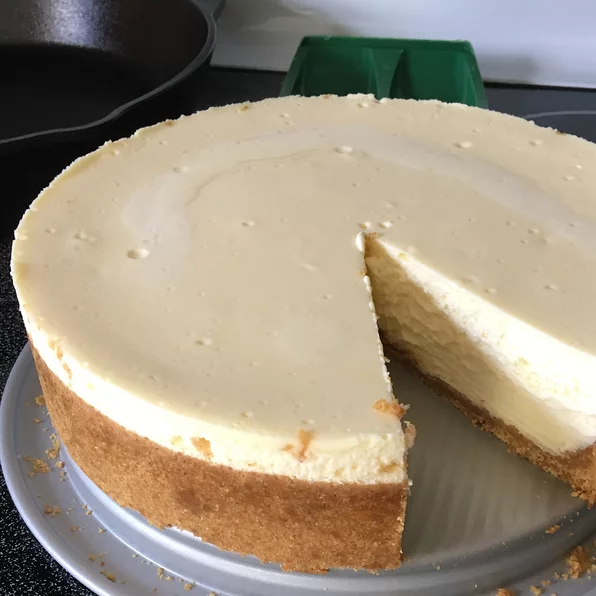

New York Cheesecake

Description
This is a great cheesecake. I get a lot of requests for the recipe.
Ingredients
- 2 pounds cream cheese
- 3/4 cup white sugar
- 2 eggs
- 1 teaspoon vanilla extract
- 2 tablespoons cornstarch
- 1 cup sour cream
- 1 1/2 cups graham cracker crumbs
- 6 tablespoons melted butter
- 1/4 cup white sugar
Steps
- Preheat oven to 400 degrees F (205 degrees C).
- Mix graham cracker crumbs, melted butter, and 1/4 cup sugar together. Press mixture onto the bottom of one 9 or 10 inch springform pan. Place in freezer for 10 minutes.
- Cream 3/4 cup of the sugar and cream cheese until smooth. Beat in eggs, vanilla, and cornstarch until just mixed. Stir in sour cream until blended. Pour into prepared crust.
- Bake at 400 degrees F (205 degrees C) for 45 minutes. Turn oven off and leave cake in oven with the door ajar for 3 hours. Serve with your favorite topping.